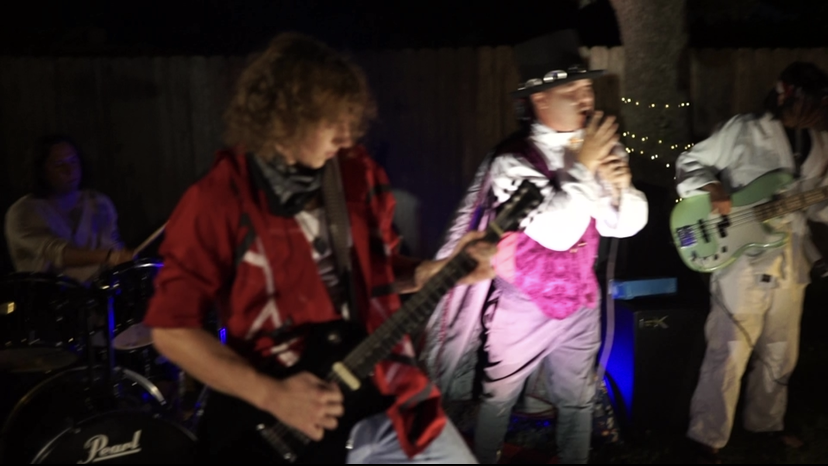
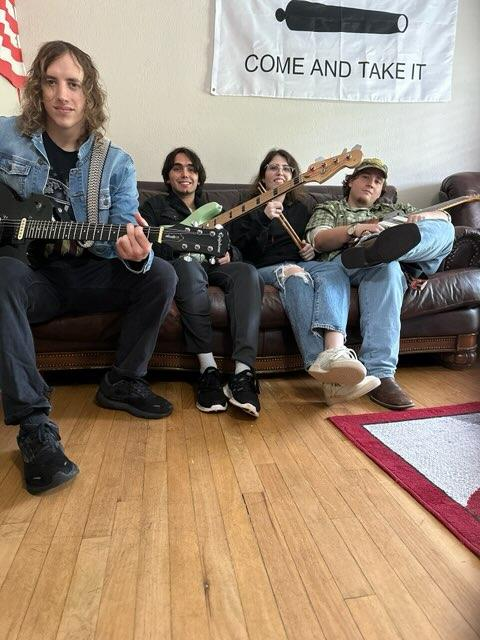

Animal Teeth
 Picture from the first Animal Teeth concert on Halloween night  Iconic lineup (left to right) Tyler, Noah, Kate, Garret I began learning and practicing guitar in July 2019 during my breaks while lifeguarding. Eventually in April 2021 I reached out to a bass player on bandmix.com named Noah, who was also a student at Texas A&M. I invited him to join a band I was forming with a drummer named Colton. When we returned to class in the fall Noah and I recruited a drummer named Brandon and a vocalist named Jake to play in the band. We decided to call the new band Animal Teeth and we played our first show at a house party on Halloween night. After that we played one more show together after which Brandon graduated from A&M and Jake moved away after starting a new job. After a year of constant lineup changes in 2022 we eventually recruited vocalist Garret and drummer Brady who played one show before quitting and was replaced by drummer Kate. Animal Teeth would see the most success with this lineup of Garret on vocals and guitar, Tyler on guitar, Noah on bass, and Kate on drums and it would be the "iconic" lineup of Animal Teeth. Garret and I graduated in May of 2023 and subsequently left the band. This "iconic" lineup played its final show May 5, 2023. Checkout some of our old preformances on instagram @animalteethcstx
 The classic lineup playing First Friday in downtown Bryan in 2021
The classic lineup playing First Friday in downtown Bryan in 2021
 Iconic lineup performing at Century Square Garden
Iconic lineup performing at Century Square Garden
 Iconic lineup performing at Hullapalooza
Iconic lineup performing at Hullapalooza
Intramural Sports
The spring semester of 2022 my friends and I started a coed intrumural flag football team since many of us including myself had played football in high school. That semester we played 4v4 and won the championship. Next semester we recruited some more of our friends and decided to play intramural coed 8v8 flag football and coed softball. We didn't win the championship that year but we still had lots of fun playing.
Crossfit
The first time I ever did a crossfit workout I was starting eighth grade. My mom convinced me to do a workout at her gym to help me with football, but I hated it at first and swore I wouldn't do it again. After finishing football season my freshman year, in an effort to stay in shape over winter break I went back to crossfit with my dad and I've been going almost every day since then. Nothing has helped my fitness and athleticism like crossfit. I am grateful for the health benefits of crossfit and the community it provides.
 Me preparing to do a muscle up
Me preparing to do a muscle up
 Me practicing my handstand walks
Me practicing my handstand walks